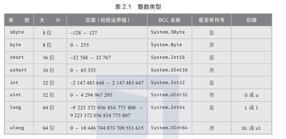
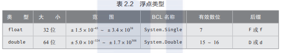
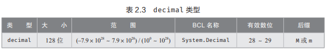

C#支持完整的BCL（基类库）名字，但是最好都统一使用关键字进行使用与开发，比如使用int而不是System.Int32，以及使用string类型时候应当使用string而不是Systen.String以及String。
作为一名拥有良好编写习惯的程序员，要一致！不要变来变去！
C#有八种整形：

C#包含以下两类浮点浮点类型：

浮点数精度可变。我们应该清楚一件事情就是，计算机在底层存储我们数据时都采用二进制方式进行存储，那么也说明二进制浮点类型无法精确我们所想要表达的数。我们还需要记住的是，浮点数精度由有效位数的个数决定，而不是由一个固定值决定。

这一个类型存在的意义就是保证范围内所有的十进制数都是精确的。所表示的数值就是本身，0.114514就是0.114514，不是一个近似值。
凡事都是需要取舍的，虽然decimal类型拥有极高的精度，但是它的所能表示的范围更小。从浮点类型转换为decimal类型就会可能出现溢出错误。
此外，decimal类型的计算速度稍慢。（小幅度，可忽略）
字面值表示源代码中的固定值。
System.Console.WriteLine(114514)
System.Console.WriteLine(1.114514)直接将值放到源代码中称为硬编码，需要注意是的，每次进行值的修改，就需要重新编译代码，这可能会对维护造成一定的影响。
默认情况下，带小数的字面值会被编译器自动解释成double类型，没有小数且int类型范围内的字面值则会被解释成int类型，要是字面值太大了塞不进int，就会被解释成long类型。
我们有时候会有一些特殊的需求，除了可以直接声明数据类型的方式之外，我们也可以采用直接加入后缀的方式显示声明想要的类型：
栗子：
System.Console.WriteLine(1.1145141919810M);字面值当中可以使用下划线 _ 分隔，这对于程序而言并不会产生声明影响，但是可以方便我们阅读，也只是好看而已。
System.Console.WriteLine(1_145_141_919_810);十六进制字面值：
System.Console.WriteLine(0x1BF52);上面这一串代码执行后得到114514的内容，也就是说我们使用了十六进制的输入方式，计算机则以十进制的方式返回。
将数字格式化为十六进制
System.Console.WriteLine($"0x{114514:x}");C#基元类型是Boolean或条件类型bool。bool的BCL名称是System.Boolean。另外在存储空间上，一个二进制位以0和1足以表示bool类型的数值，但是bool类型的实际大小是一个字节。
字符类型char表示16位字符。char的大小和ushort相同（0~65535），但它是C#当中的特有类型，需要单独对待。char的BCL名称是System.Char。
输入char类型的字面值需要将字符放到一堆单引号之中，例如'L'，凡是使用char类型的字符，都可以用该方式存储。
但是有些字符我们是不能够直接输入的，需要进行转义处理。首先输入反斜杠 "" 前缀，再跟上所想要特殊字符代码。这一套下来称之为转义序列。例如："\n"（换行），"\t"（制表符），"\"（反斜杠），"'"（单引号）。
零或多个字符就成了字符串。string是C#的基本字符串类型，BCL名称是System.String。
首先先说明@和$的作用：
注意逐字和插值可同时使用，但是需要先指定$，再指定@，例如：
System.Console.WriteLine($@"My name is {firstname}{lastname}.");字符串插值内部工作原理：
字符串插值调用了string.Format()方法的语法糖（可读性高并且能够保持代码性能）：
System.Console.WriteLine($"Your name is {firstname}{lastname}.");会被转化成以下代码：
object[] args = new object[] {firstname,lastname};
Console.WriteLine(string.Format("Your name is {0}{1}."),args);字符串插值在幕后编译成CIL后都会使用string.Format()。
字符串方法
string类型也提供了对应的方法进行字符串操作。
string的静态方法：
string.Format():字符串插值
string text = string.Format("Your name is {0}{1}。"，firstname,lastname);string.Concat()：字符串连接
string text = string.Concat(first,lastname);string.Compare(string str0,string str1，bool flag):字符串比较，第三个参数为是否不区分大小写比较。
int result = string.Comcare("Yes","yes");string的实例方法：
需要创建出对应的对象，之后对象进行方法的调用。以下只列出对应的方法，不再进行代码实例。
using 和 using static指令，调用静态方法需要附加命名空间和类型名前缀，可以使用这类指令避免这些前缀。例如：System.Console.WriteLine()方法，只要在namespace声明之前加上using static System.Console;指令，就可以在方法中直接引用WriteLine()方法。using 和 using static的区别在于，using static方法只能够作用域静态成员，而using指令能够作用全部成员。
换行符也有讲究，Windows的换行符是 \r 和 \n 两个字符的组合，UNIX则是单个\n。为了能够跨平台，可以使用
System.Console.WriteLine("♂");自动输出换行符，则一语句和以下语句等价
System.Console.Write("♂" + System.Environment.NewLine);以上两条语句在windows上等价于
System.Console.Write("♂\r\n");总之为了避免跨平台的兼容性问题，应该尽量避免单独使用\n来进行换行操作，多依靠System.Console.WriteLine()和System.Environment.NewLine()来实现换行操作。
字符串长度，判断字符串长度可以使用string的Length成员。它是只读属性，并不是一个方法，所以并不需要它后面增加括号，属性内容后文会进行详细的讲述。示例代码：
string text = "deep dark fantastic";
System.Console.WriteLine(text,Length);字符串不可变，这就意味着字符串为引用类型，当我们指定了一个新的字符串的内容后，字符串都引用该内容，当我们需要对字符串进行更改，只能在其他内存位置新建字符串内容，字符串引用新的字符串内容，而旧的内容若没有其他字符串变量引用则会垃圾回收。
System.Text.StringBuilder类型，这一个类型适合用于经历多个步骤来构造一个长字符串，它与string的区别在于，StringBuilder的方法会修改本身的数据，而string是返回一个新的字符串。
null可直接赋给字符串变量，表明为空，不指向任何变量。null只能赋值给引用类型，指针类型和可空值类型。值得注意的是null值于""值是两个概念，null表示不指向任何变量，而""表示指向了内存位置中存在一个空值的位置，这个空值是真实存在的。
voidvoid本质上不是数据类型，它只是指出没有数据类型这一事实，告诉计算机不要指望返回什么。
C#存在过多的类型，类型之间的互相转换是很重要的。所以交换自检的常见操作就是转型或强制类型转换。
高精度的变量向低精度的变量转换，long向int转换，这一类可能会造成数据丢失，这就需要用到显示转换，反过来，不会造成数据丢失，而且不会异常的任何转换成为隐式转换。
显示转换就相当于在和计算机说，我晓得我在干啥，放心去做吧，然后计算机就照着你的意思去做了，明确指出，所以称之为显示转换。
C#提供了特殊关键字来表示代码块，会检查是否出现溢出。
class Program{
static void main(){
checked{
int n = int.MaxValue;
n = n + 1;
System.Console.WriteLine(n);
}
}
}上述代码在运行时发生赋值溢出将引发异常。
unchecked则是强制不进行溢出检查，块内溢出不会引发异常，即便是开启了checked选项，unchecked关键字也会阻止“运行时”引发异常。
不使用转型操作符的类型转换，我们需要把一个字符串里面的数值变成我们想要的数值类型时，可以用到Parse()这样的方法来。每个数据类型都有Parse()方法，能够把字符串转化成对应的数字类型。
string text = "114514";
float t1 = int.Parse(text);System.Convert可以把一种类型转化成另一种类型，但是该方法只支持少量类型，且不可扩展，这里不详细说。
还有一个值得注意的地方：所有类型都支持ToString()方法，可提供类型的字符串表示。
TryParse()，这个静态方法在C# 2.0开始所有的基元数值类型都包含。于Parse()用法很接近，但是转换失败不会引发异常，而是返回false。这里不细说。
狠下心来系统的、全面的将C#学习一边，即便是以前写过一些C#项目，回头看这些知识点还是感觉像是学到了新的东西一样，当然也是不想像之前一样感觉语言写着写着觉得好陌生，也为了今后开发unity能够在脚本实现上少绕更多的弯。
现在多踩踩坑总归是好的。